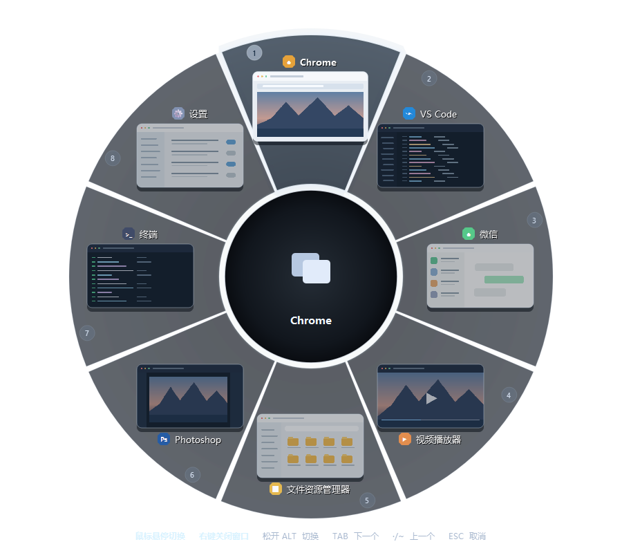

一眼看全窗口
窗口名称和预览沿圆环展开，快速认出要去的那个。最小化窗口也能参与切换。
按住熟悉的 Alt，所有窗口在眼前展开。看着预览选目标，松开按键就切换，不再靠连续按 Tab 猜窗口。
免安装 · 下载 EXE 后双击运行 · 仅支持 Windows

真实界面预览保持原来的快捷键习惯，让每次切换都更确定。
窗口名称和预览沿圆环展开，快速认出要去的那个。最小化窗口也能参与切换。
Tab、反引号键、鼠标悬停和滚轮都能选；松开 Alt 或点击窗口就能切换。
在托盘中切换主题和背景效果，也能自定义窗口名称与鼠标切换方式。
程序启动后常驻系统托盘。平时照常工作，需要切换时，圆环才会出现。
从 GitHub 发行版下载最新的 Windows EXE，双击运行后可在系统托盘找到它。
下载 RadialAltTab.exe 免安装 · 无需 Python · 查看发行版详情